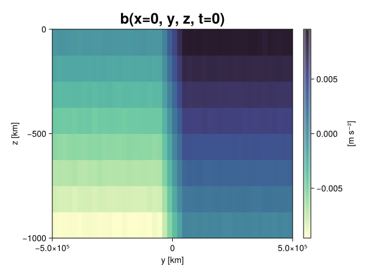
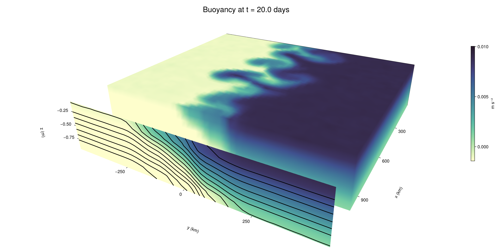

Baroclinic adjustment
In this example, we simulate the evolution and equilibration of a baroclinically unstable front.
Install dependencies
First let's make sure we have all required packages installed.
using Pkg
pkg"add Oceananigans, CairoMakie"using Oceananigans
using Oceananigans.UnitsGrid
We use a three-dimensional channel that is periodic in the x direction:
Lx = 1000kilometers # east-west extent [m]
Ly = 1000kilometers # north-south extent [m]
Lz = 1kilometers # depth [m]
grid = RectilinearGrid(size = (48, 48, 8),
x = (0, Lx),
y = (-Ly/2, Ly/2),
z = (-Lz, 0),
topology = (Periodic, Bounded, Bounded))48×48×8 RectilinearGrid{Float64, Periodic, Bounded, Bounded} on CPU with 3×3×3 halo
├── Periodic x ∈ [0.0, 1.0e6) regularly spaced with Δx=20833.3
├── Bounded y ∈ [-500000.0, 500000.0] regularly spaced with Δy=20833.3
└── Bounded z ∈ [-1000.0, 0.0] regularly spaced with Δz=125.0Model
We built a HydrostaticFreeSurfaceModel with an ImplicitFreeSurface solver. Regarding Coriolis, we use a beta-plane centered at 45° South.
model = HydrostaticFreeSurfaceModel(; grid,
coriolis = BetaPlane(latitude = -45),
buoyancy = BuoyancyTracer(),
tracers = :b,
momentum_advection = WENO(),
tracer_advection = WENO())HydrostaticFreeSurfaceModel{CPU, RectilinearGrid}(time = 0 seconds, iteration = 0)
├── grid: 48×48×8 RectilinearGrid{Float64, Periodic, Bounded, Bounded} on CPU with 3×3×3 halo
├── timestepper: QuasiAdamsBashforth2TimeStepper
├── tracers: b
├── closure: Nothing
├── buoyancy: BuoyancyTracer with ĝ = NegativeZDirection()
├── free surface: ImplicitFreeSurface with gravitational acceleration 9.80665 m s⁻²
│ └── solver: FFTImplicitFreeSurfaceSolver
├── advection scheme:
│ ├── momentum: WENO reconstruction order 5
│ └── b: WENO reconstruction order 5
└── coriolis: BetaPlane{Float64}We start our simulation from rest with a baroclinically unstable buoyancy distribution. We use ramp(y, Δy), defined below, to specify a front with width Δy and horizontal buoyancy gradient M². We impose the front on top of a vertical buoyancy gradient N² and a bit of noise.
"""
ramp(y, Δy)
Linear ramp from 0 to 1 between -Δy/2 and +Δy/2.
For example:
```
y < -Δy/2 => ramp = 0
-Δy/2 < y < -Δy/2 => ramp = y / Δy
y > Δy/2 => ramp = 1
```
"""
ramp(y, Δy) = min(max(0, y/Δy + 1/2), 1)
N² = 1e-5 # [s⁻²] buoyancy frequency / stratification
M² = 1e-7 # [s⁻²] horizontal buoyancy gradient
Δy = 100kilometers # width of the region of the front
Δb = Δy * M² # buoyancy jump associated with the front
ϵb = 1e-2 * Δb # noise amplitude
bᵢ(x, y, z) = N² * z + Δb * ramp(y, Δy) + ϵb * randn()
set!(model, b=bᵢ)Let's visualize the initial buoyancy distribution.
using CairoMakie
# Build coordinates with units of kilometers
x, y, z = 1e-3 .* nodes(grid, (Center(), Center(), Center()))
b = model.tracers.b
fig, ax, hm = heatmap(view(b, 1, :, :),
colormap = :deep,
axis = (xlabel = "y [km]",
ylabel = "z [km]",
title = "b(x=0, y, z, t=0)",
titlesize = 24))
Colorbar(fig[1, 2], hm, label = "[m s⁻²]")
fig
Simulation
Now let's build a Simulation.
simulation = Simulation(model, Δt=20minutes, stop_time=20days)Simulation of HydrostaticFreeSurfaceModel{CPU, RectilinearGrid}(time = 0 seconds, iteration = 0)
├── Next time step: 20 minutes
├── Elapsed wall time: 0 seconds
├── Wall time per iteration: NaN days
├── Stop time: 20 days
├── Stop iteration : Inf
├── Wall time limit: Inf
├── Callbacks: OrderedDict with 4 entries:
│ ├── stop_time_exceeded => Callback of stop_time_exceeded on IterationInterval(1)
│ ├── stop_iteration_exceeded => Callback of stop_iteration_exceeded on IterationInterval(1)
│ ├── wall_time_limit_exceeded => Callback of wall_time_limit_exceeded on IterationInterval(1)
│ └── nan_checker => Callback of NaNChecker for u on IterationInterval(100)
├── Output writers: OrderedDict with no entries
└── Diagnostics: OrderedDict with no entriesWe add a TimeStepWizard callback to adapt the simulation's time-step,
conjure_time_step_wizard!(simulation, IterationInterval(20), cfl=0.2, max_Δt=20minutes)Also, we add a callback to print a message about how the simulation is going,
using Printf
wall_clock = Ref(time_ns())
function print_progress(sim)
u, v, w = model.velocities
progress = 100 * (time(sim) / sim.stop_time)
elapsed = (time_ns() - wall_clock[]) / 1e9
@printf("[%05.2f%%] i: %d, t: %s, wall time: %s, max(u): (%6.3e, %6.3e, %6.3e) m/s, next Δt: %s\n",
progress, iteration(sim), prettytime(sim), prettytime(elapsed),
maximum(abs, u), maximum(abs, v), maximum(abs, w), prettytime(sim.Δt))
wall_clock[] = time_ns()
return nothing
end
add_callback!(simulation, print_progress, IterationInterval(100))Diagnostics/Output
Here, we save the buoyancy, $b$, at the edges of our domain as well as the zonal ($x$) average of buoyancy.
u, v, w = model.velocities
ζ = ∂x(v) - ∂y(u)
B = Average(b, dims=1)
U = Average(u, dims=1)
V = Average(v, dims=1)
filename = "baroclinic_adjustment"
save_fields_interval = 0.5day
slicers = (east = (grid.Nx, :, :),
north = (:, grid.Ny, :),
bottom = (:, :, 1),
top = (:, :, grid.Nz))
for side in keys(slicers)
indices = slicers[side]
simulation.output_writers[side] = JLD2OutputWriter(model, (; b, ζ);
filename = filename * "_$(side)_slice",
schedule = TimeInterval(save_fields_interval),
overwrite_existing = true,
indices)
end
simulation.output_writers[:zonal] = JLD2OutputWriter(model, (; b=B, u=U, v=V);
filename = filename * "_zonal_average",
schedule = TimeInterval(save_fields_interval),
overwrite_existing = true)JLD2OutputWriter scheduled on TimeInterval(12 hours):
├── filepath: ./baroclinic_adjustment_zonal_average.jld2
├── 3 outputs: (b, u, v)
├── array type: Array{Float64}
├── including: [:grid, :coriolis, :buoyancy, :closure]
├── file_splitting: NoFileSplitting
└── file size: 30.2 KiBNow we're ready to run.
@info "Running the simulation..."
run!(simulation)
@info "Simulation completed in " * prettytime(simulation.run_wall_time)[ Info: Running the simulation...
[ Info: Initializing simulation...
[00.00%] i: 0, t: 0 seconds, wall time: 13.861 seconds, max(u): (0.000e+00, 0.000e+00, 0.000e+00) m/s, next Δt: 20 minutes
[ Info: ... simulation initialization complete (14.341 seconds)
[ Info: Executing initial time step...
[ Info: ... initial time step complete (24.393 seconds).
[06.94%] i: 100, t: 1.389 days, wall time: 39.675 seconds, max(u): (1.305e-01, 1.191e-01, 1.605e-03) m/s, next Δt: 20 minutes
[13.89%] i: 200, t: 2.778 days, wall time: 2.552 seconds, max(u): (2.131e-01, 1.764e-01, 1.745e-03) m/s, next Δt: 20 minutes
[20.83%] i: 300, t: 4.167 days, wall time: 2.436 seconds, max(u): (2.893e-01, 2.329e-01, 1.729e-03) m/s, next Δt: 20 minutes
[27.78%] i: 400, t: 5.556 days, wall time: 2.591 seconds, max(u): (3.548e-01, 2.865e-01, 1.722e-03) m/s, next Δt: 20 minutes
[34.72%] i: 500, t: 6.944 days, wall time: 2.417 seconds, max(u): (4.295e-01, 3.717e-01, 1.918e-03) m/s, next Δt: 20 minutes
[41.67%] i: 600, t: 8.333 days, wall time: 2.565 seconds, max(u): (5.125e-01, 5.426e-01, 2.094e-03) m/s, next Δt: 20 minutes
[48.61%] i: 700, t: 9.722 days, wall time: 2.451 seconds, max(u): (6.676e-01, 8.228e-01, 2.672e-03) m/s, next Δt: 20 minutes
[55.56%] i: 800, t: 11.111 days, wall time: 2.562 seconds, max(u): (9.834e-01, 1.130e+00, 3.498e-03) m/s, next Δt: 20 minutes
[62.50%] i: 900, t: 12.500 days, wall time: 2.796 seconds, max(u): (1.355e+00, 1.097e+00, 5.972e-03) m/s, next Δt: 20 minutes
[69.44%] i: 1000, t: 13.889 days, wall time: 2.559 seconds, max(u): (1.465e+00, 1.119e+00, 5.167e-03) m/s, next Δt: 20 minutes
[76.39%] i: 1100, t: 15.278 days, wall time: 2.573 seconds, max(u): (1.358e+00, 9.454e-01, 4.335e-03) m/s, next Δt: 20 minutes
[83.33%] i: 1200, t: 16.667 days, wall time: 2.647 seconds, max(u): (1.265e+00, 1.358e+00, 3.725e-03) m/s, next Δt: 20 minutes
[90.28%] i: 1300, t: 18.056 days, wall time: 2.461 seconds, max(u): (1.210e+00, 1.336e+00, 2.866e-03) m/s, next Δt: 20 minutes
[97.22%] i: 1400, t: 19.444 days, wall time: 2.430 seconds, max(u): (1.247e+00, 1.299e+00, 3.179e-03) m/s, next Δt: 20 minutes
[ Info: Simulation is stopping after running for 1.305 minutes.
[ Info: Simulation time 20 days equals or exceeds stop time 20 days.
[ Info: Simulation completed in 1.305 minutes
Visualization
All that's left is to make a pretty movie. Actually, we make two visualizations here. First, we illustrate how to make a 3D visualization with Makie's Axis3 and Makie.surface. Then we make a movie in 2D. We use CairoMakie in this example, but note that using GLMakie is more convenient on a system with OpenGL, as figures will be displayed on the screen.
using CairoMakieThree-dimensional visualization
We load the saved buoyancy output on the top, north, and east surface as FieldTimeSerieses.
filename = "baroclinic_adjustment"
sides = keys(slicers)
slice_filenames = NamedTuple(side => filename * "_$(side)_slice.jld2" for side in sides)
b_timeserieses = (east = FieldTimeSeries(slice_filenames.east, "b"),
north = FieldTimeSeries(slice_filenames.north, "b"),
top = FieldTimeSeries(slice_filenames.top, "b"))
B_timeseries = FieldTimeSeries(filename * "_zonal_average.jld2", "b")
times = B_timeseries.times
grid = B_timeseries.grid48×48×8 RectilinearGrid{Float64, Periodic, Bounded, Bounded} on CPU with 3×3×3 halo
├── Periodic x ∈ [0.0, 1.0e6) regularly spaced with Δx=20833.3
├── Bounded y ∈ [-500000.0, 500000.0] regularly spaced with Δy=20833.3
└── Bounded z ∈ [-1000.0, 0.0] regularly spaced with Δz=125.0We build the coordinates. We rescale horizontal coordinates to kilometers.
xb, yb, zb = nodes(b_timeserieses.east)
xb = xb ./ 1e3 # convert m -> km
yb = yb ./ 1e3 # convert m -> km
Nx, Ny, Nz = size(grid)
x_xz = repeat(x, 1, Nz)
y_xz_north = y[end] * ones(Nx, Nz)
z_xz = repeat(reshape(z, 1, Nz), Nx, 1)
x_yz_east = x[end] * ones(Ny, Nz)
y_yz = repeat(y, 1, Nz)
z_yz = repeat(reshape(z, 1, Nz), grid.Ny, 1)
x_xy = x
y_xy = y
z_xy_top = z[end] * ones(grid.Nx, grid.Ny)Then we create a 3D axis. We use zonal_slice_displacement to control where the plot of the instantaneous zonal average flow is located.
fig = Figure(size = (1600, 800))
zonal_slice_displacement = 1.2
ax = Axis3(fig[2, 1],
aspect=(1, 1, 1/5),
xlabel = "x (km)",
ylabel = "y (km)",
zlabel = "z (m)",
xlabeloffset = 100,
ylabeloffset = 100,
zlabeloffset = 100,
limits = ((x[1], zonal_slice_displacement * x[end]), (y[1], y[end]), (z[1], z[end])),
elevation = 0.45,
azimuth = 6.8,
xspinesvisible = false,
zgridvisible = false,
protrusions = 40,
perspectiveness = 0.7)Axis3()We use data from the final savepoint for the 3D plot. Note that this plot can easily be animated by using Makie's Observable. To dive into Observables, check out Makie.jl's Documentation.
n = length(times)41Now let's make a 3D plot of the buoyancy and in front of it we'll use the zonally-averaged output to plot the instantaneous zonal-average of the buoyancy.
b_slices = (east = interior(b_timeserieses.east[n], 1, :, :),
north = interior(b_timeserieses.north[n], :, 1, :),
top = interior(b_timeserieses.top[n], :, :, 1))
# Zonally-averaged buoyancy
B = interior(B_timeseries[n], 1, :, :)
clims = 1.1 .* extrema(b_timeserieses.top[n][:])
kwargs = (colorrange=clims, colormap=:deep, shading=NoShading)
surface!(ax, x_yz_east, y_yz, z_yz; color = b_slices.east, kwargs...)
surface!(ax, x_xz, y_xz_north, z_xz; color = b_slices.north, kwargs...)
surface!(ax, x_xy, y_xy, z_xy_top; color = b_slices.top, kwargs...)
sf = surface!(ax, zonal_slice_displacement .* x_yz_east, y_yz, z_yz; color = B, kwargs...)
contour!(ax, y, z, B; transformation = (:yz, zonal_slice_displacement * x[end]),
levels = 15, linewidth = 2, color = :black)
Colorbar(fig[2, 2], sf, label = "m s⁻²", height = Relative(0.4), tellheight=false)
title = "Buoyancy at t = " * string(round(times[n] / day, digits=1)) * " days"
fig[1, 1:2] = Label(fig, title; fontsize = 24, tellwidth = false, padding = (0, 0, -120, 0))
rowgap!(fig.layout, 1, Relative(-0.2))
colgap!(fig.layout, 1, Relative(-0.1))
save("baroclinic_adjustment_3d.png", fig)
Two-dimensional movie
We make a 2D movie that shows buoyancy $b$ and vertical vorticity $ζ$ at the surface, as well as the zonally-averaged zonal and meridional velocities $U$ and $V$ in the $(y, z)$ plane. First we load the FieldTimeSeries and extract the additional coordinates we'll need for plotting
ζ_timeseries = FieldTimeSeries(slice_filenames.top, "ζ")
U_timeseries = FieldTimeSeries(filename * "_zonal_average.jld2", "u")
B_timeseries = FieldTimeSeries(filename * "_zonal_average.jld2", "b")
V_timeseries = FieldTimeSeries(filename * "_zonal_average.jld2", "v")
xζ, yζ, zζ = nodes(ζ_timeseries)
yv = ynodes(V_timeseries)
xζ = xζ ./ 1e3 # convert m -> km
yζ = yζ ./ 1e3 # convert m -> km
yv = yv ./ 1e3 # convert m -> km49-element Vector{Float64}:
-500.0
-479.1666666666667
-458.3333333333333
-437.5
-416.6666666666667
-395.8333333333333
-375.0
-354.1666666666667
-333.3333333333333
-312.5
-291.6666666666667
-270.8333333333333
-250.0
-229.16666666666666
-208.33333333333334
-187.5
-166.66666666666666
-145.83333333333334
-125.0
-104.16666666666667
-83.33333333333333
-62.5
-41.666666666666664
-20.833333333333332
0.0
20.833333333333332
41.666666666666664
62.5
83.33333333333333
104.16666666666667
125.0
145.83333333333334
166.66666666666666
187.5
208.33333333333334
229.16666666666666
250.0
270.8333333333333
291.6666666666667
312.5
333.3333333333333
354.1666666666667
375.0
395.8333333333333
416.6666666666667
437.5
458.3333333333333
479.1666666666667
500.0Next, we set up a plot with 4 panels. The top panels are large and square, while the bottom panels get a reduced aspect ratio through rowsize!.
set_theme!(Theme(fontsize=24))
fig = Figure(size=(1800, 1000))
axb = Axis(fig[1, 2], xlabel="x (km)", ylabel="y (km)", aspect=1)
axζ = Axis(fig[1, 3], xlabel="x (km)", ylabel="y (km)", aspect=1, yaxisposition=:right)
axu = Axis(fig[2, 2], xlabel="y (km)", ylabel="z (m)")
axv = Axis(fig[2, 3], xlabel="y (km)", ylabel="z (m)", yaxisposition=:right)
rowsize!(fig.layout, 2, Relative(0.3))To prepare a plot for animation, we index the timeseries with an Observable,
n = Observable(1)
b_top = @lift interior(b_timeserieses.top[$n], :, :, 1)
ζ_top = @lift interior(ζ_timeseries[$n], :, :, 1)
U = @lift interior(U_timeseries[$n], 1, :, :)
V = @lift interior(V_timeseries[$n], 1, :, :)
B = @lift interior(B_timeseries[$n], 1, :, :)Observable([-0.009377533257689958 -0.008136632342302292 -0.0068954803855391785 -0.0056301366771405355 -0.004379951799084012 -0.0031377197945775936 -0.0018667425362922895 -0.0006572978405994185; -0.009386960661278228 -0.008138805073920383 -0.0068877738642007845 -0.005629704889117779 -0.004405700570791531 -0.0031129851591586376 -0.001893908546490706 -0.0006241690610251174; -0.009378296527427022 -0.008129890174708446 -0.006898109303238589 -0.00565035177954185 -0.004391040367190344 -0.0031058714232884313 -0.001865477421824375 -0.0006009976189417963; -0.009403194147773549 -0.008128188374472774 -0.0068975322062837545 -0.0056389666964837175 -0.00437733753330219 -0.003154243020470378 -0.0018491075239540162 -0.0005947293515985724; -0.009355090654619739 -0.008143374240511293 -0.006879080451354665 -0.005634664761723883 -0.004373929007889431 -0.0031220727432221818 -0.0018817386726475347 -0.0006076015604625966; -0.009385863599883151 -0.008153759872550006 -0.0068790156838565986 -0.005629884437490215 -0.004378100668809043 -0.0031215061536857915 -0.0018674657046541543 -0.0006382134432740279; -0.00938049462326636 -0.008113573690739551 -0.0068786476778027695 -0.0056356280944009325 -0.004381893734481695 -0.003123167010455326 -0.001863821009147229 -0.0006021545745852097; -0.009390717348350992 -0.008114511530797668 -0.006890634630777719 -0.005630121288289496 -0.004378207525150953 -0.003135050542621805 -0.0018932619910299302 -0.0006234179286237991; -0.009382814963110291 -0.008115804266665664 -0.00686479150584834 -0.00561537216622415 -0.004387014838958683 -0.003149668147837755 -0.0018606653823850675 -0.0006075555567124022; -0.00937901640067989 -0.008098921727250486 -0.006878873002355933 -0.005617274054285519 -0.0043786052346123676 -0.003115037135457013 -0.0018613755692461966 -0.0006663688142462421; -0.009394483288100624 -0.008104610557582584 -0.006882400558198253 -0.005619704304403606 -0.004388185449415567 -0.0030893772850923034 -0.0018607061713696322 -0.000643457280412637; -0.00936265548162955 -0.00813493782863397 -0.006890890893886223 -0.005620627208457182 -0.004361352574085587 -0.0031036233669173214 -0.001879551260314238 -0.0006205656845679766; -0.00937069491513699 -0.008118578286258183 -0.0068651477555690945 -0.005651351168539928 -0.004379088585910022 -0.0031337338792827574 -0.0018738349483333073 -0.000617687460292404; -0.009380038446812877 -0.008127112290697352 -0.006857994030165276 -0.005624493212404943 -0.004372048843909174 -0.0031250651146967037 -0.0018907668192057973 -0.0006078118737052931; -0.00937186612986672 -0.008146524549669016 -0.006857323499068461 -0.00561199328983147 -0.004380462918303872 -0.0031304436746503995 -0.0018730187216409264 -0.0006258823519764074; -0.009356291786970254 -0.008101755391806811 -0.0068555931707772475 -0.005634734888876181 -0.004374460161408508 -0.0031075157510449636 -0.0018781754027816053 -0.0006057701875927314; -0.00938710756173036 -0.008157857403866415 -0.006877744169216218 -0.005614417568802006 -0.004341802692673985 -0.0031284317074202796 -0.0018721368967402803 -0.0006423798429417442; -0.009341631947146227 -0.008132231861801047 -0.006843322141491272 -0.005632257883103364 -0.004368419457802594 -0.003116090625383379 -0.00190355374692352 -0.0006278076951091609; -0.009363866352679672 -0.008132520913106846 -0.006878223959805505 -0.005617412286905601 -0.004350123878490282 -0.00311625545694101 -0.0018887206404900353 -0.0006232761763166507; -0.00938457889336 -0.008129528336063415 -0.006868553043570001 -0.005622028567033643 -0.004371367809841633 -0.0031414508405744937 -0.0018972126957650355 -0.0006193730515745848; -0.009375164898237722 -0.008126390370616231 -0.006869444784658475 -0.005625905011897907 -0.004370232477670288 -0.003125413326015797 -0.0018742662749912855 -0.0006198526688037175; -0.009362693521073386 -0.008125784984346867 -0.006871926980177245 -0.00564170754508608 -0.004371136296539634 -0.0031012733378403367 -0.0018842278316011961 -0.000621002934731778; -0.007515393809591565 -0.0062486367139112835 -0.005004852639694349 -0.003754846076718896 -0.002492531731381101 -0.0012548851053754634 -2.3673533936579305e-6 0.0012436027448716651; -0.005429034043138406 -0.004185415333575954 -0.0029115049413941407 -0.0016927319518746482 -0.00041508337987166316 0.0008142539303708187 0.002106897210958088 0.0033205415151449035; -0.0033441100208224848 -0.0020743634970845086 -0.0008270132907133232 0.00040691204931000963 0.0016758753669627359 0.0029386212976265625 0.0041773031999073765 0.005412162157709201; -0.0012654758018998031 -1.0126185887888811e-5 0.0012398801690176613 0.0025011997887201365 0.003747694113521127 0.005011118305273531 0.0062506721810705315 0.007480812174657393; 0.0005938066198221917 0.0018761441873039741 0.0031309087792428577 0.004357128619618555 0.0056345397709643905 0.0068817355211217455 0.008144363521896887 0.009360311404301; 0.0006159108809587291 0.0018881778526507315 0.003128471018178478 0.004354040982368061 0.005597117611694786 0.006883278984775588 0.008102998899771362 0.009400329206456287; 0.0006337552297301961 0.0018667717509674626 0.003117577367149453 0.004346335408451312 0.005643691328043953 0.006898862516308825 0.008114909195842115 0.009363564398530201; 0.0006131024994047564 0.001906528515486737 0.003133352401045748 0.00440040499613777 0.005641094689686287 0.006858017027521039 0.008137770122058652 0.009390111544223043; 0.0006151624234434493 0.0018674785792299527 0.0031027704472954207 0.004353891607136022 0.005616120772021824 0.006901742979161865 0.008130637594099004 0.009382978831761292; 0.0006484989244126652 0.0018701159008295554 0.0031369814365077285 0.004381606787039819 0.005628946151756307 0.006857570356066971 0.008130854815846113 0.009361401977200928; 0.0006171880946586216 0.0018632492536899356 0.0031090157923820585 0.00435676422214029 0.005626476477719757 0.006873618678272059 0.00813245319818244 0.009387036637249824; 0.000619988919410557 0.0018742610443782534 0.003112495523380336 0.004396023178772337 0.005618569321719291 0.006887933370520014 0.008122146057109892 0.009370573532534844; 0.0005990807215088672 0.001881047595052938 0.0031293826488176333 0.0043411851648690785 0.005633186621009462 0.0068791938206041155 0.008136496396688083 0.009383683508629094; 0.0005993545556061861 0.0018618507017480544 0.003122322231355629 0.004373701400361537 0.005630750834611515 0.00687250580764343 0.008122683112973018 0.009379320364849971; 0.0006312059073564162 0.0018740455068535578 0.003107161885804039 0.004362402747777653 0.005625057044130223 0.00686029613076813 0.00813355845772015 0.009385949010281879; 0.0006269073431960002 0.0018701647828084998 0.003110330272627066 0.0043706797034868275 0.005606085393006822 0.006874742661790029 0.008108268683940979 0.009383235343489478; 0.0006574755587558787 0.0018716623252733277 0.0031241874263428847 0.004362599327344081 0.005627272277919852 0.006862349587232454 0.008100776050388002 0.009373898785878937; 0.0006035907755601253 0.0018789225191993674 0.0031360862084648185 0.00437863000296232 0.005599603320441853 0.0068897741651784096 0.008137915627272374 0.009380712225136418; 0.0006329552910465984 0.0018623005360536885 0.0031163011091702767 0.004362121173166673 0.0056252568284444774 0.006865052065312853 0.008092895120294994 0.009381789146804594; 0.0006294211143478618 0.0018597248615113728 0.0031144070472306543 0.004372306916702732 0.005637958882534558 0.006869943729827928 0.008129710712113497 0.009398601415970494; 0.0006193322094811674 0.0018780532815913362 0.0031355985597492746 0.004369757404198596 0.005622210735896607 0.006863068612929058 0.008119619993651994 0.009396182026147322; 0.0005979798020227917 0.0018946016114730223 0.003139896024999487 0.004367819460860202 0.005620318415322308 0.006875233998690188 0.008146975836436308 0.009352494157125177; 0.0006073452203702703 0.0018910583491489861 0.0031097807509964073 0.004350477305681384 0.005617060355611443 0.0068730767883350904 0.008133582334808867 0.00938095992484372; 0.0006545794550763765 0.0018754413755319762 0.003121420544374075 0.004392489901329894 0.0056234173761310425 0.006881642144527594 0.008124024318578133 0.009360491107146558; 0.0006520833015135095 0.001863147964182409 0.0031094381650142266 0.004370901567799818 0.0056449979789201105 0.006913773081894327 0.008094519752984607 0.009368450290974816; 0.0006382745408546577 0.0018811700743366474 0.0030946697775460063 0.004378569883277372 0.005630978177344342 0.006860986618853548 0.008108264428793562 0.009375686862612904])
and then build our plot:
hm = heatmap!(axb, xb, yb, b_top, colorrange=(0, Δb), colormap=:thermal)
Colorbar(fig[1, 1], hm, flipaxis=false, label="Surface b(x, y) (m s⁻²)")
hm = heatmap!(axζ, xζ, yζ, ζ_top, colorrange=(-5e-5, 5e-5), colormap=:balance)
Colorbar(fig[1, 4], hm, label="Surface ζ(x, y) (s⁻¹)")
hm = heatmap!(axu, yb, zb, U; colorrange=(-5e-1, 5e-1), colormap=:balance)
Colorbar(fig[2, 1], hm, flipaxis=false, label="Zonally-averaged U(y, z) (m s⁻¹)")
contour!(axu, yb, zb, B; levels=15, color=:black)
hm = heatmap!(axv, yv, zb, V; colorrange=(-1e-1, 1e-1), colormap=:balance)
Colorbar(fig[2, 4], hm, label="Zonally-averaged V(y, z) (m s⁻¹)")
contour!(axv, yb, zb, B; levels=15, color=:black)Finally, we're ready to record the movie.
frames = 1:length(times)
record(fig, filename * ".mp4", frames, framerate=8) do i
n[] = i
endThis page was generated using Literate.jl.